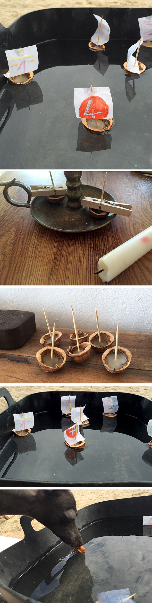

Nussboote aus Wachs, Zahnstochern und Papier.
Nur unser mega Monster Lucrecia ( Lu ) schafft es sie zu versenken!
Barcos de nuez de cera, palillo de dientes y papel.
Solo nuestro mega monster Lucrecia ( Lu) se las arregla para hundirlos!
Nut boats made of wax, toothpicks and paper.
Only our mega monster Lucrecia (Lu) manages it to sink them!
